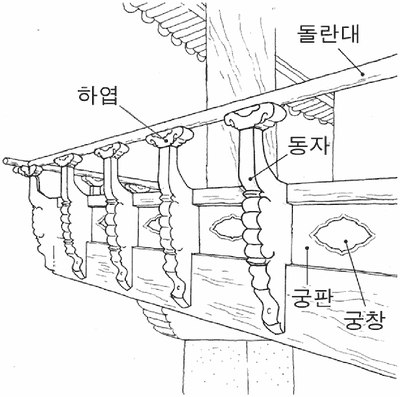

난간
지문을 먼저 읽고, 이해가 막히는 문단에서 ‘그림으로 보기’를 누르세요. 그림은 문단을 따라 바뀝니다.
1문단우리의 전통 가옥이나 누정, 사찰, 궁궐의 건축물 등에서 쉽게 볼 수 있는 것이 난간(欄干)이다. 선인들의 작품에 ‘난간에 기대어’라는 표현이 심심찮게 나올 정도로 난간에는 우리 조상들의 삶의 숨결과 미의식이 깃들어 있다. ⓐ자칫 소홀하게 여길 수 있는 거주 공간의 끝자락에서도 선인들은 여유와 미감을 찾고자 했던 것이다.
2문단난간은 ⓑ원래 사람들의 추락을 막기 위한 목적으로 마루, 계단, 다리 등에 설치되었다. 우리의 전통 건축물이 대부분 목조 양식을 띠고 있기 때문에 석조 난간보다는 목조 난간이 널리 설치되었다. 목조 난간은 일반 민가에서 쉽게 볼 수 있는 질박하고 수수한 난간에서부터 멋과 미감을 살린 계자(鷄子) 난간으로 발전되어 갔다.
3문단민가에서 주로 보이는 보통의 난간이 특별한 장식 없이 널빤지만으로 잇는 소박한 형태였다면, 계자 난간은 궁판(穹板)에 궁창(穹窓)을 만들어 잇기도 하고, 때로는 궁판 대신에 다양한 모양의 살창을 끼워 ⓒ한껏 멋을 살리기도 했다. 또한 동자(童子)를 짜서 마루와 궁판에 끼워 난간을 튼튼하게 만들면서도 장식미를 드러내고 있다. 난간은 오채(五彩)를 뽐내는 단청의 화려함이나 서까래로 잘 짜 맞춘 대들보의 단단함에는 비길 수 없지만, 그 나름대로 질박하면서도 화사한 멋과 야무진 짜임새를 ⓓ고루 갖추고 있다.

4문단목조가 연출하는 난간의 건축 미학은 자연 친화성에서 나온다. 난간은 특히 독특한 색깔과 무늬로 다른 건축 재료와 조화를 이루는 나무 본래의 특성을 ⓔ잘 살리고 있다. 멀리서 볼 때 주변 환경과 멋들어지게 어울리는 건물의 품새와 잘 짜인 구성미를 살릴 수 있었던 것도 나무로 만든 난간이 바탕이 되었기 때문이다. 난간을 지을 때 하엽(荷葉)과 돌란대를 단단히 고정시키기 위해 박는 국화 모양의 나무못에서도 자연 친화적인 선인들의 미의식을 확인할 수 있다.
5문단궁창은 수복강녕(壽福康寧)을 상징하는 거북이나 구름뿐 아니라 연꽃 등 다양한 모양으로 만들어지기도 한다. 여기에는 장식적 목적도 있었지만 답답하게 느껴질 수 있는 건물 내부 공간을 시원스럽게 개방함으로써 자연스레 바깥 세계를 끌어들이기 위한 의도도 들어 있다. 여름날 툇마루나 대청마루의 난간 창살 사이로 살랑살랑 불어오는 시원한 미풍의 감촉도 바로 이러한 ㉠난간의 공간 미학적 특징에서 비롯된다. 선인들의 삶의 지혜와 미의식을 곳곳에서 발견할 수 있는 난간이야말로 우리 건축물의 아름다움을 잘 보여 주는 소중한 문화유산이다.